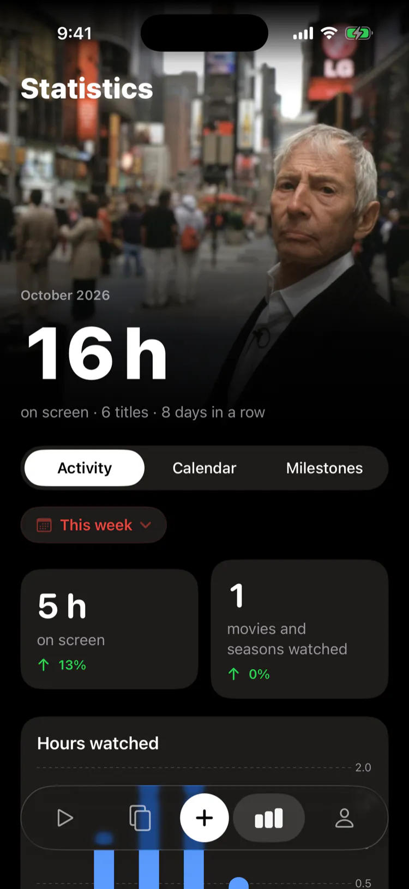
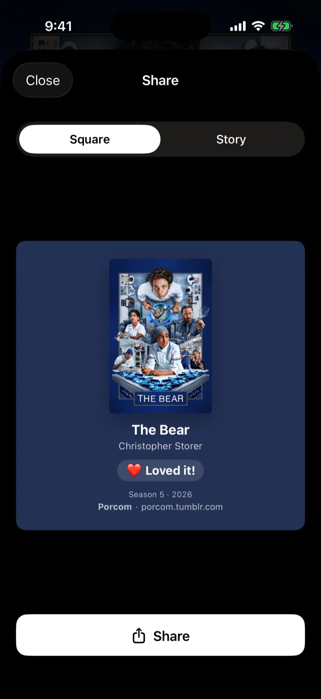
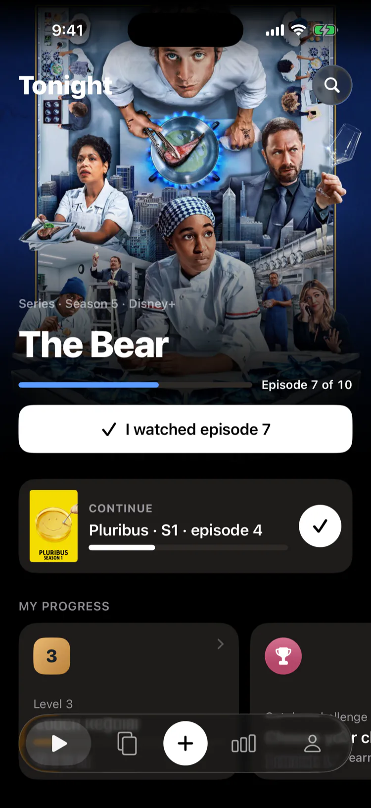

Your year on screen, ready to share
Last updated: November 21, 2026
Every movie and every season you watched, turned into your year on screen: the numbers, the highlights and your year in posters. Free for iPhone, with no account.

The numbers of your year
Titles watched, movies and seasons, hours on screen and episodes, the busiest month, the longest movie, the season you watched the fastest, and the director or creator of your year.
Your year in posters
Share your year on screen as an image, or a single title with your verdict, square for a post or tall for a story.

Levels, milestones and challenges
Twelve levels, from Corn Kernel to Big Screen Legend at 10,000 hours, milestones to unlock, a challenge each month, and special ones for Halloween and Christmas.

Every day of it
Your calendar keeps each viewing, day by day, all year long.

Free and private
Porcom works without an account. Your journal stays on your iPhone and in your private iCloud, which we can’t access.
Download Porcom on the App Store: free, with no account, no ads and no subscription.

Questions
See the frequently asked questions or visit Support.